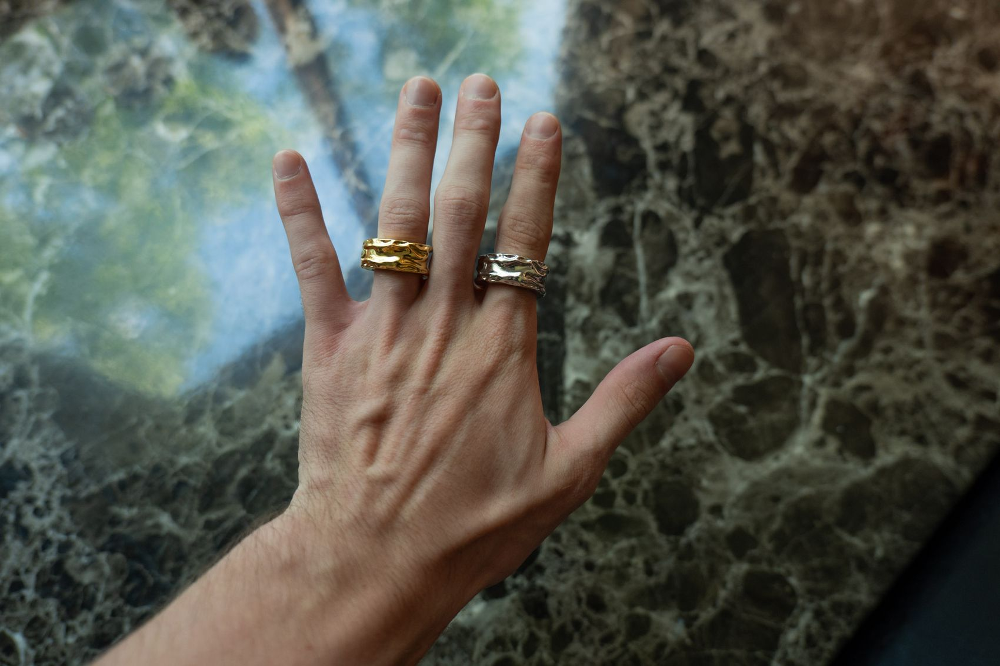
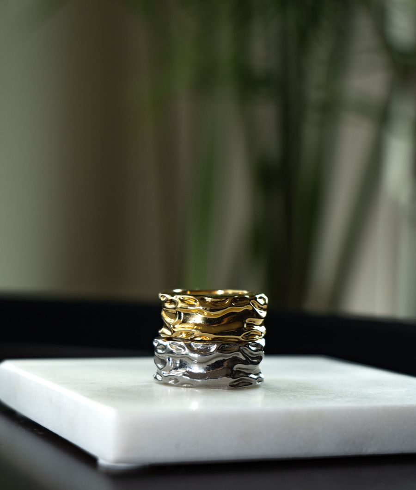
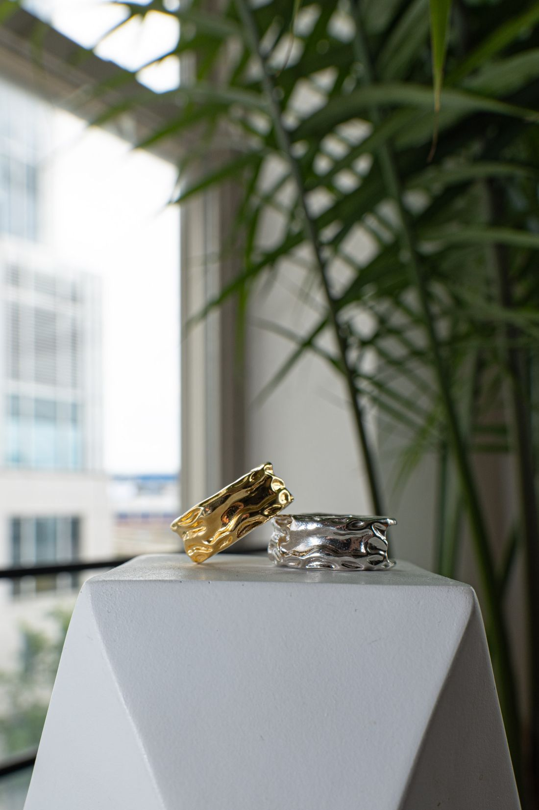
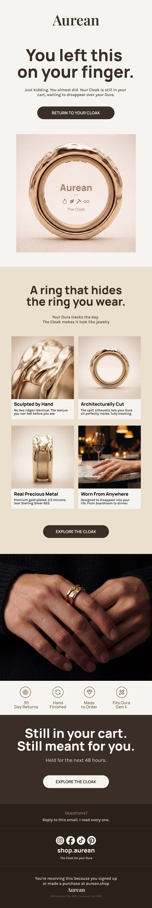
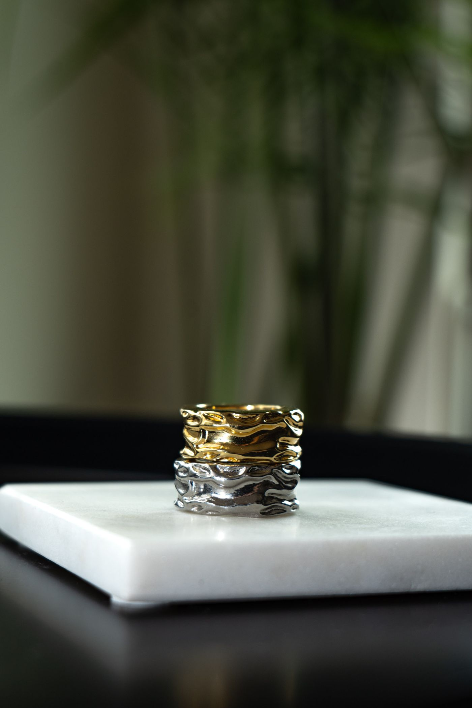

I built and ran the entire email program for a jewelry brand I founded. The list, the campaigns, the flow architecture, and the sending infrastructure underneath all of it.
Every figure on this page was exported from the Klaviyo account before it closed.
No audience, no ad spend, no seeding. The list was built on organic writing: posts in Reddit and Facebook communities that earned 200,000+ views, one of them reaching 120,000 alone.
Readers landed on a password-protected Shopify storefront and left an email to be told when it opened.
It is a small list and it behaved like one. Hand-built organic lists engage well above paid-acquisition lists of the same size. Read everything below in that light.


Every subject line, every word of body copy, every CTA, and the design.

| Campaign | Sent | Open | Click |
|---|---|---|---|
| Pricing + Event + Socials · "The cloak is real" | 356 | 53.4% | 6.7% |
| Announcing July Pre-Order | 343 | 53.6% | 2.0% |
| Founders List Samples Shipped | 362 | 51.7% | 1.7% |
| Gen 5 Survey | 345 | 34.2% | 11.3% |
| CLOAK IS LIVE · launch day | 359 | 46.0% | 5.6% |
| All seventeen | 6,089 | 45.4% | 3.2% |
The two outliers taught me more than the average did.
"The cloak is real" paired a four-word declarative subject with preview text carrying three hard facts: pre-order date, event dates, pricing inside. Best combined open and click of the program.
The Gen 5 Survey inverted it. Lowest open rate of anything I sent and nearly four times the click rate, because everyone who opened it had something specific to do.
Two of them below. The brand wound down in August, so some branches never shipped and are drawn as outlines.
Craft, story, product, transparency, incentive. The offer sits last on purpose. A pre-launch list has nothing to buy yet, so the first job is earning the right to sell, and email four exists specifically to say where the brand really was instead of implying it was further along.
Two decisions I would make again. The order check repeats before every send rather than once at the top, so anyone who buys between email one and email two stops hearing about their cart immediately.
And the last branch splits on list membership. A founding waitlist member who abandons has a different reason than a stranger who abandons. They were never going to get the same email.
I set up the sending domain and its authentication myself. SPF, DKIM and DMARC verified in DNS, consent capture at signup, one-click unsubscribe, central suppression.
| Spam complaint rate, whole program | 0.07% |
| Delivery rate | 99.7% |
| Bounce rate | 0.3% |
| Hard bounces, list lifetime | 1 |
Two complaints across 6,089 sends. I built the alerting around a 0.1% threshold and it never came close.

Aurean wound down in August 2026. Manufacturing cost and the price the product had to carry never reconciled, and no amount of email was going to fix that.
The program did what it was built to do. A list from nothing, mid-forties open rates across seventeen sends, a clean sending reputation, and a flow architecture I would build the same way again.
The lesson was about sequencing, not copy. I built a full lifecycle before I had validated that anyone would pay what the product required.